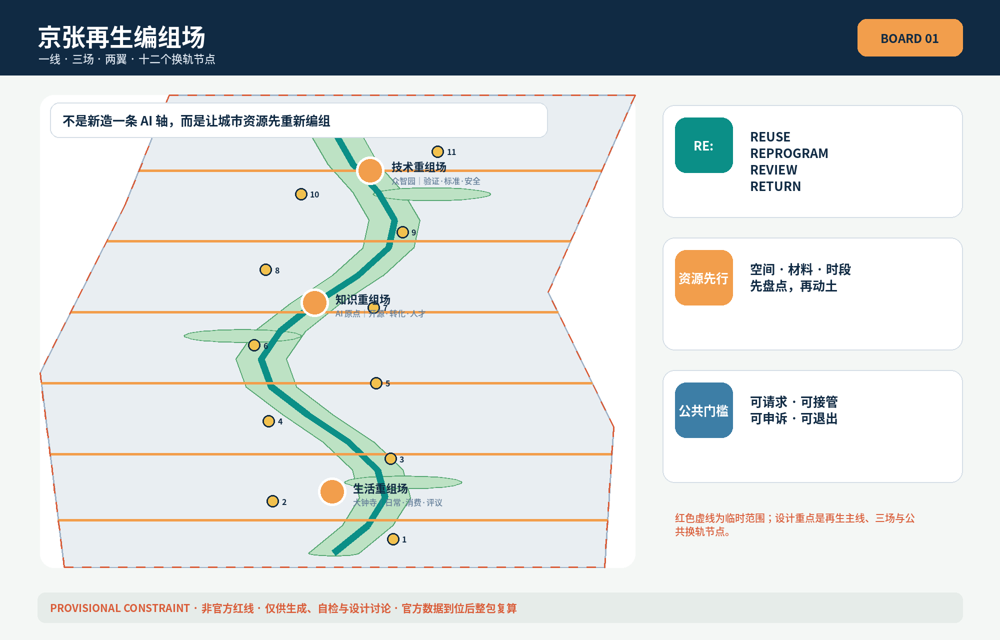
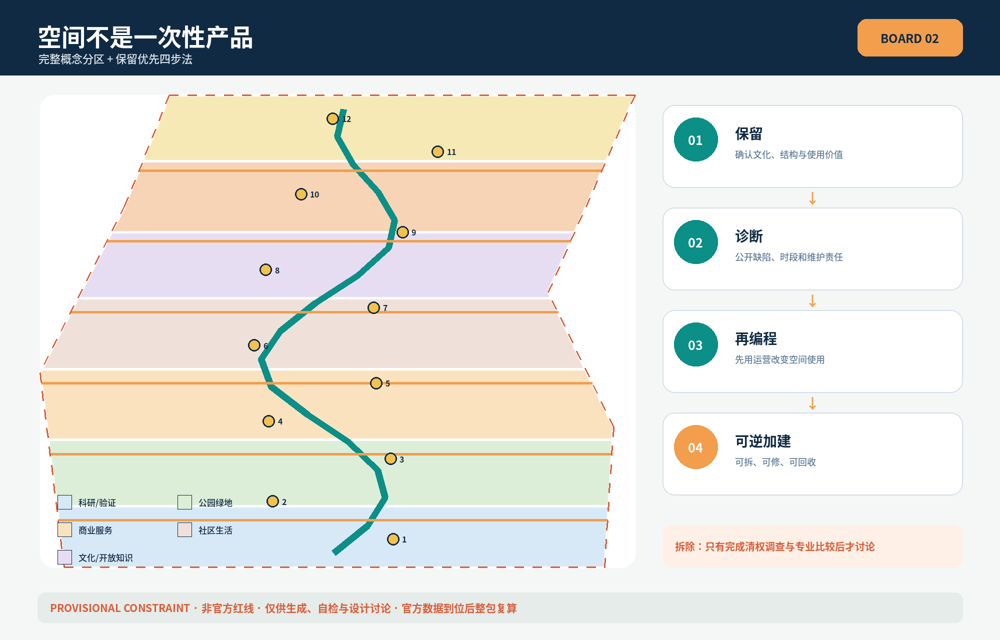
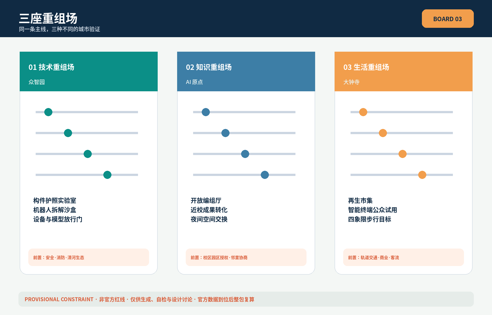
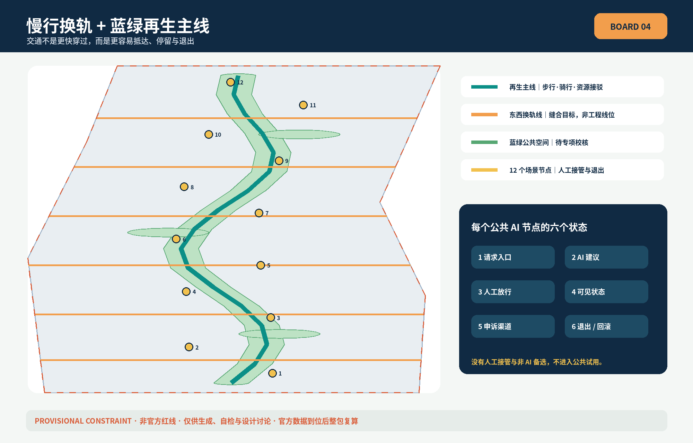
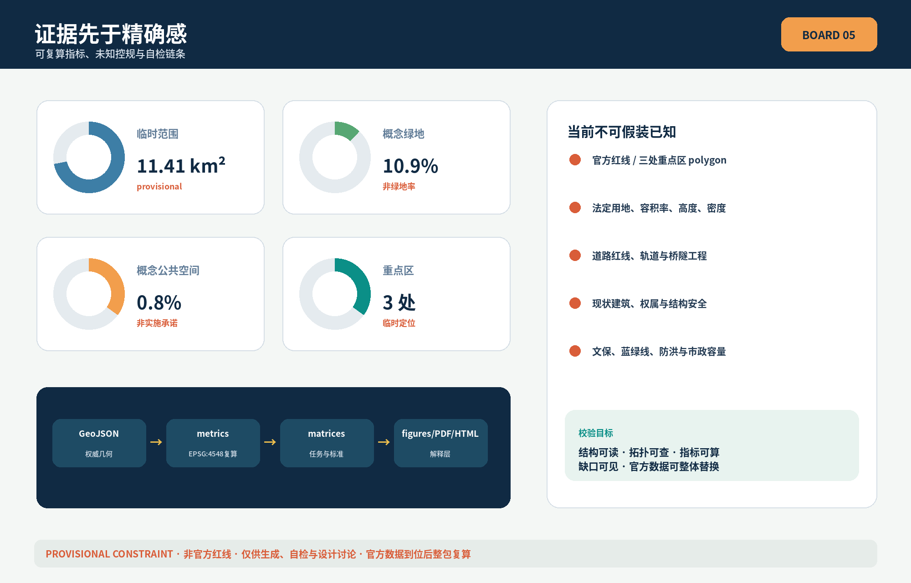

京张再生编组场：把城市更新从拆建工程变成资源重组
以铁路编组为城市更新方法：用一条再生主线、三座重组场、两翼资源网络和十二个换轨节点，让存量空间、材料、功能与时段先被看见、匹配和再用。
京张再生编组场：把城市更新从拆建工程变成资源重组
> **REASSEMBLY JINGZHANG · 百年工程线，下一代资源线。** 本方案是开放共创建议，不替代正式规划，不构成政府审定结论；所有空间动作均为可供专业团队深化研究的概念建议。
设计依据与资料清单
方案以官方公告确认的三层范围、三处重点区域和设计任务为主控依据 [source:OFFICIAL-ANNOUNCEMENT] [standard:PROJECT-OFFICIAL-ANNOUNCEMENT]，以面向智能体任务书的共创原则、六项任务和边界条款为参与依据 [source:AGENT-TASKBOOK] [standard:PROJECT-AGENT-OPEN-CALL-TASKBOOK]。城市设计、控规深度与用地分类分别依据本地标准快照 [standard:MOHURD-URBAN-DESIGN-MEASURES] [standard:MOHURD-CONTROL-DETAILED-PLANNING] [standard:MNR-LAND-USE-CLASSIFICATION-GUIDE]；建筑工程设计深度标准尚无官方文件，只作为明确的数据缺口 [standard:MOHURD-ARCH-DESIGN-DEPTH-2016]。
data/source_registry.json 决定资料能支撑什么主张 [source:SOURCE-REGISTRY]；处理事实包只承担阅读导航，不提升任何资料权威 [source:PROCESSED-FACT-PACK]。当前 SITE_BOUNDARY 与三处 KEY_AREA 均来自仓库临时粗略 polygon [source:BOUNDARY-SOURCE] [source:KEY-AREA-SOURCE] [data:geometry/site_boundary.geojson#SITE-001] [data:geometry/key_areas.geojson#PROV-KEY-001]。它们是 provisional_constraint，不是官方红线，不能支撑审批、权属、道路红线或精确面积结论；官方附件到位后，九个 GeoJSON、指标、图件、HTML 与 PDF 必须整包重算 [depth:existing_conditions_diagnosis]。

本方案的诊断不是“这里缺少更炫的 AI 建筑”，而是：存量空间、材料、设备、使用时段与公共需求缺少可被共同检索的接口；城市更新容易在信息不完整时直接跳到拆建。因缺少现状建筑、权属、控规、文保、河道和市政资料，本方案不伪造现状底图，转而提交一个可核验的“再编组方法”及其概念空间载体。
三层范围工作框架
统筹研究范围约 43.6 平方公里，负责资源协同规则与全球生态联系；总体设计范围约 11.4 平方公里，负责再生主线、用地概念分区、慢行蓝绿网络与更新工具；三处重点区约 368.4 公顷，分别验证技术、知识和生活空间的重组机制 [source:OFFICIAL-ANNOUNCEMENT] [depth:three_level_scope_framework]。临时提交边界复算面积为 [metric:site_area_sqm]，只用于自检，不替代公告约值。

总体结构是“**一线、三场、两翼、十二个换轨节点**”：京张遗址公园周边形成再生主线；众智园、AI 原点和大钟寺分别成为技术重组场、知识重组场、生活重组场；中关村科技服务翼提供法务、资本、设计与标准服务，小月河场景赋能翼提供受控实测和公众反馈；十二个节点把材料、空间、服务与人重新配对 [data:geometry/roads.geojson#ROAD-001] [data:geometry/public_space.geojson#PUBLIC-001] [depth:overall_spatial_structure]。
命名系统以“编组”回应京张铁路工程文化，以“RE:”表示 reuse、reprogram、review、return。Logo 方向为两条开放括号状轨道围合一个可切换箭头，任何应用都保留一处空位，表示城市永远允许下一次修订；颜色取铁路铁锈橙、再生绿和工程蓝。字体、图形均使用开源或本方案原创几何，不使用企业商标。
统筹研究范围产业与未来城市研究
六个全球案例只用于机制比较，不用于推导本项目控规：Mila 的研究—人才社群 [source:CASE-MILA]、Vector Institute 的产业合作网络 [source:CASE-VECTOR]、STATION F 的共享创业载体 [source:CASE-STATION-F]、AI Singapore 的人才—应用协作 [source:CASE-AI-SG]、Cyber Valley 的科研—创业连接 [source:CASE-CYBER-VALLEY]、Alan Turing Institute 的跨机构公共利益研究 [source:CASE-TURING]。可转化的共同点不是复制建筑形象，而是为研究、人才、应用、公共问责和持续运营建立稳定接口 [standard:PROJECT-AGENT-OPEN-CALL-TASKBOOK]。
| 案例机制 | 京张转译 | 空间接口 | | --- | --- | --- | | 研究与人才共同体 | 跨校开放课题与贡献记录 | AI 原点开放编组厅 | | 产业合作网络 | 需求发布—受控验证—复盘 | 众智园验证编组场 | | 共享创业载体 | 空间按阶段和时段匹配 | 再生空间交易台 | | 人才与应用协作 | 场景题库、导师与人工复核 | 小月河测试节点 | | 科研—创业连接 | 原型从实验到公共试用的门槛 | 三阶段放行门 | | 公共利益研究 | 申诉、退出、审计和长期评估 | 大钟寺公众评议厅 |
产业生态被组织为“发现闲置—提出需求—计算匹配—专业核验—轻量试用—公开复盘—再次编组”的闭环。土地、空间、产业、资金、人才、算力、数据和场景不是一次性配置，而是各有来源、许可、责任人和退出条件的资源车厢。城市 AI 只做建议、排序和模拟；权属判断、结构安全、审批、采购与公众权益仍由有权主体和专业人员决定 [depth:development_intensity_controls]。
总体设计范围城市更新与控规深度城市设计
land_use.geojson 将临时边界拓扑安全地完整分区，表达科研、公共绿地、商业服务、社区生活、文化和广场等概念角色 [data:geometry/land_use.geojson#LU-001] [depth:land_use_layout]；它不声称现状或审定用途。buildings.geojson 只表达九个“保留优先诊断站、低扰动改造工坊、可逆加建样板、共享首层接口”原型 [data:geometry/buildings.geojson#BLDG-001]，概念基底合计 [metric:building_footprint_area_sqm]，不对应真实建筑。
更新四步法为：**保留**（先确认文化、结构和使用价值）、**诊断**（公开缺陷与使用时段）、**再编程**（用运营改变而非先动土）、**可逆加建**（可拆、可修、可回收）。只有完成建筑调查、权属协商、结构鉴定、碳与公共利益比较后，专业团队才可讨论拆除。容积率 [metric:floor_area_ratio]、高度、密度、绿地率、退线均因缺少正式控规而保持 unknown；高度体量只提出“尊重既有天际线、沿遗址公园控制友好尺度、地标以公共可达性而非高度取得识别”的原则 [depth:height_massing_character] [depth:retain_renovate_demolish]。
重点区域详细设计

三处重点区数量为 [metric:key_area_count]，边界均为临时矩形，仅承担任务定位 [data:geometry/key_areas.geojson#PROV-KEY-001] [data:geometry/key_areas.geojson#PROV-KEY-002] [data:geometry/key_areas.geojson#PROV-KEY-003] [depth:three_key_area_detailed_design]。
1. **众智园｜技术重组场**：把全栈自主创新、标准与安全治理转成“构件护照实验室—机器人拆解沙盒—模型与设备放行门”序列；清河界面只提出低扰动花园测试概念，等待河道、防洪和生态条件。对外交通只提出接驳目标，不画工程线位。 2. **AI 原点｜知识重组场**：以近校开放编组厅连接成果发布、开源贡献、知识产权与人才生活；首层和夜间空间先做时段共享，再讨论物理改造。任何校区、园区或建筑介入都需权属同意。 3. **大钟寺｜生活重组场**：以轨道站周边四象限的步行可达目标组织“再生市集、智能终端试用、内容共创、公众评议”；不声称站点一体化工程可行，也不指定企业或商业承诺。
三场之间不是产业等级关系：众智园回答“技术能否安全拆解和重组”，AI 原点回答“知识能否开放转化”，大钟寺回答“服务能否进入日常并接受公众评价”。
AI 创新生态、人才画像与 AI+ 场景
六类人物贯穿方案：模型与机器人研发者需要可控测试；高校师生需要成果转化与开放协作；初创团队需要低成本时段空间；园区运维者需要可维护资产台账；周边居民需要安静、无障碍且可退出的服务；国际访客需要不依赖品牌背书的可读证据。画像只描述角色需求，不建立个人追踪画像 [source:AGENT-TASKBOOK]。
十二张场景卡全部对应 PUBLIC-001 至 PUBLIC-012，其中前三项是产业测试验证场景 [data:geometry/public_space.geojson#PUBLIC-001]：
| 卡 | 场景 | 人—空间—运营 | 数据与人工边界 | | --- | --- | --- | --- | | SC-01★ | 构件护照实验室 | 研发者—众智园—材料登记与复核 | 只记录清权构件；工程师签署 | | SC-02★ | 机器人拆解沙盒 | 设备团队—封闭试验院—预约测试 | 安全员可急停；不得直接进公共区 | | SC-03★ | 街道界面数字孪生 | 设计团队—可逆样段—方案比较 | 模拟不等于审批；专家核验 | | SC-04 | 闲置空间匹配站 | 初创团队—共享首层—时段契约 | 权属方确认；不公布敏感租赁信息 | | SC-05 | 可逆内装工具库 | 运维者—改造工坊—借用归还 | 构造安全由专业人员复核 | | SC-06 | 社区维修图书馆 | 居民—邻里节点—维修互助 | 不以算法评价居民信用 | | SC-07 | 荫凉雨水管家 | 行人—绿脊—人工巡检 | 环境传感只采聚合值 | | SC-08 | 无障碍路线应答 | 多龄用户—慢行线—问题派单 | 可匿名反馈；人工确认修复 | | SC-09 | 路缘时段共享 | 骑行与配送者—路缘节点—时段预约 | 交通管理部门决定，不自动执法 | | SC-10 | 开源城市课堂 | 师生—原点社区—公开课程 | 作品与肖像需授权 | | SC-11 | 夜间空间交换 | 社区与团队—大钟寺—错峰共享 | 噪声、消防与邻里协商先行 | | SC-12 | 百年材料档案 | 公众—遗址叙事线—开放策展 | 历史事实与版权人工校核 |
每个场景必须有“请求入口、AI 建议、人工放行、可见状态、申诉渠道、退出/回滚”六个状态。没有人工接管、无法说明数据来源或无法恢复到非 AI 服务的场景，不进入公共试用。
用地、建筑规模与拆改留方案
用地完整分区采用国土空间分类子集，但所有代码都是概念分区标签 [standard:MNR-LAND-USE-CLASSIFICATION-GUIDE] [data:geometry/land_use.geojson#LU-001]。建筑策略不按“新旧好坏”分类，而按证据成熟度分类：A 级已有清权调查可保留维护；B 级待结构与使用诊断；C 级可先做运营再编程；D 级仅在专业论证后讨论可逆加建。没有任何对象被本方案判定为拆除。
“材料护照”建议记录来源、尺寸、状态、检测、许可、拆装方法和下一次复用条件；“空间护照”记录权属授权、开放时段、服务人群、无障碍和退出条件。两类护照是运营和专业协作建议，不是行政登记或资产确权 [depth:retain_renovate_demolish]。
交通、轨道、市政与公共服务设施
京张再生主线是一条概念步行—骑行—小型资源接驳复合线，六条东西换轨线缝合高校、园区、社区与轨道接驳目标 [data:geometry/roads.geojson#ROAD-001] [depth:traffic_rail_slow_parking]。大钟寺四象限、五道口/清华东路西口和北五环相关节点只提出“连续、可达、少绕行、无障碍、静态交通有序”的绩效目标；道路红线、断面、桥隧和信号方案必须由交通专项确定。

市政建议采用“小规模、可计量、可关停”的边缘算力与环境传感原型；优先复用既有机房和设备空间，并把能耗、维护和故障公开到运营台账。分布式能源、热回收、排水与储能均需负荷、消防、防洪和管线条件后再论证 [data:geometry/constraints.geojson#CONSTRAINTS] [depth:municipal_new_infrastructure]。公共服务保留线下窗口和人工服务，不能以数字化为由排除老人、儿童、残障者或无智能设备者。
蓝绿空间、公共空间与城市风貌
再生绿脊由一条连续缓行廊道和三座再生花园组成 [data:geometry/green_space.geojson#GREEN-001]，概念绿地比例 [metric:green_ratio]；十二个换轨节点构成低强度公共空间网络，概念公共空间比例 [metric:public_space_ratio] [depth:blue_green_public_space]。比例均基于临时边界和概念图层，不是法定绿地率或公共空间承诺。
四个 AI 朝圣/荣誉节点为：**百年构件档案塔**（以可复用构件和来源讲工程史）、**开放换轨厅**（展示方案如何被质询和修订）、**一公里材料账本**（沿线可读的来源—使用—再用时间轴）、**未建成纪念台**（表彰通过证据避免不必要建设的贡献）。地标以公共知识和贡献记录取得识别，不追求超高体量；落位需文保、绿地、结构和安全审查 [standard:MOHURD-URBAN-DESIGN-MEASURES]。
文化叙事把三种传统连续起来：京张铁路的工程组织与维护，中关村的迭代与知识共享，AI 时代的可追溯与可修订。导视采用“车厢卡”记录每个项目的来源、当前状态、责任人和下一站，国际传播语为 **A city that rearranges before it replaces**。
更新项目清单、实施政策与分期计划
| 项目 | 概念动作 | 进入下一阶段前置条件 | | --- | --- | --- | | R-01 再生主线 | 慢行、资源接驳与叙事连续化 | 公园、交通、文保与权属核验 | | R-02 众智园技术重组场 | 三项受控产业验证 | 安全、消防、数据与运营主体 | | R-03 原点开放编组厅 | 成果发布与时段共享 | 高校园区授权和邻里协商 | | R-04 大钟寺再生市集 | 智能原生业态公众试用 | 轨道、商业、消防与客流评估 | | R-05 十二换轨节点 | 场景卡分级放行 | 隐私影响评估与人工接管 | | R-06 材料与空间护照 | 公开字段和复核流程 | 权属、许可、网络安全与保密 | | R-07 全球再编组周 | 开放课题、展览、维修与复盘 | 活动许可、安全、版权与预算 |
第一阶段“先做账”建立资料、公众问题和轻量临时试点；第二阶段“再编程”推进经授权的存量空间共享与低扰动改造；第三阶段“成网络”在专业评估后复制成熟组件并形成长期运营 [data:geometry/phasing.geojson#PHASE-001] [depth:renewal_project_list] [depth:phasing_implementation]。分期不代表确定建设时序。
政策工具建议包括：保留优先证据门、材料/空间护照、可逆构造导则、公共场景放行证、时段共享契约和年度未建成贡献奖。年度活动体系包含春季城市题库、夏季受控测试、秋季全球再编组周、冬季公开复盘；开发者社区以 issue—测试—评议—归档工作流运营。所有活动、资金、招商与平台均为建议 [source:AGENT-TASKBOOK]，受 [A-OPERATIONS-001] 限制。
指标体系、面积复算与合规矩阵

本包只把可由提交几何复算的值标为 known：临时场地面积 [metric:site_area_sqm]、概念建筑基底 [metric:building_footprint_area_sqm]、概念绿地比例 [metric:green_ratio]、概念公共空间比例 [metric:public_space_ratio] 和三处重点区数量 [metric:key_area_count]。容积率 [metric:floor_area_ratio] 保持 unknown。所有值由 EPSG:4548 复算 [depth:metrics_recalculation]；compliance_matrix.json 覆盖公告 1.3、1.4、1.5 和 agent.1—agent.6，standard_matrix.json 与 design_depth_matrix.json 把标准、深度、图层、指标和图纸串成证据链。
衡量方案价值不使用虚构产值或招商数字，而建议长期追踪：被避免的非必要拆除、经核验再用构件比例、空间共享时数、人工接管成功率、申诉解决率、无障碍问题关闭率和场景退出成功率。这些运营指标目前没有基线，不能写入 known 空间指标。
风险、版权与合规说明
最大风险依次是：官方边界与重点区缺失；控规、道路、建筑、权属、市政、消防、防洪、文保和服务设施底数缺失；“材料护照”可能触及资产与商业信息；空间匹配可能强化不透明分配；机器人测试可能产生安全风险。对应措施是维持 provisional 标识、只提交概念原型、最小化数据、公开规则、人工复核、分级放行、可申诉和可退出 [depth:risk_missing_data] [data:geometry/constraints.geojson#CONSTRAINTS]。
五张图、离线 HTML 与 PDF 均由本提交的 GeoJSON、metrics、矩阵和原创排版派生；不使用外部地图瓦片、新闻图片、企业 Logo 或生成式氛围渲染。字体使用系统 Noto Sans CJK 的开放许可版本，版权说明见 report/copyright_statement.md。本方案不声称官方批准、政府承诺、最终投资、建设规模、土地权属、工程可行性或确定活动安排。
参考资料
完整来源记录见 sources.json。核心资料包括官方公告 [source:OFFICIAL-ANNOUNCEMENT]、任务书 [source:AGENT-TASKBOOK]、site package [source:SITE-PACKAGE]、来源登记表 [source:SOURCE-REGISTRY]、事实包 [source:PROCESSED-FACT-PACK]、临时边界 [source:BOUNDARY-SOURCE] 与临时重点区 [source:KEY-AREA-SOURCE]；六个全球案例来源仅作背景机制比较 [source:CASE-MILA] [source:CASE-VECTOR] [source:CASE-STATION-F] [source:CASE-AI-SG] [source:CASE-CYBER-VALLEY] [source:CASE-TURING]。